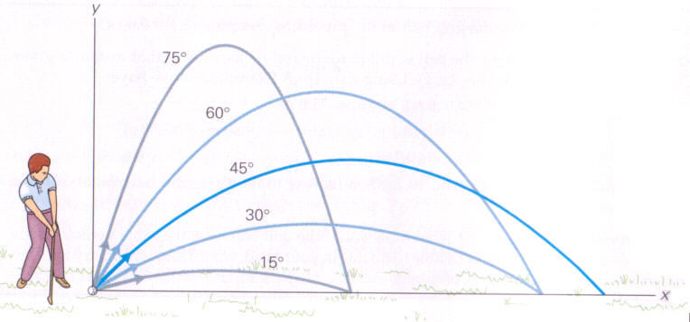

Problem 1
Investigating the Range as a Function of the Angle of Projection
Projectile motion describes the motion of an object launched into the air under the influence of gravity, assuming no air resistance. It follows a curved trajectory known as a parabola and is governed by Newton’s laws of motion. The motion is analyzed by breaking it into two perpendicular components:
- Horizontal Motion – Constant velocity (no acceleration).
- Vertical Motion – Accelerated motion due to gravity
Let’s define key parameters:
-\(v_0\): Initial velocity (m/s).
-\(\theta\): Launch angle (degrees).
-\(g\): Acceleration due to gravity (m/s²).
-\(t\): Time (s).
-\(x, y\): Horizontal and vertical position (m).
Equations of Motion
Horizontal Motion (Constant Velocity)
Since no external force acts horizontally, the acceleration is zero:
The horizontal displacement over time is:
Vertical Motion (Accelerated Motion)
The object experiences acceleration due to gravity:
The vertical displacement is given by the kinematic equation:
Key Calculations
Time of Flight
The total time the projectile stays in the air can be found by setting \(y(T) = 0\)(assuming it lands at the same height):
Solving for \(T\):
For example, if \(v_0 = 20\) m/s and \(\theta = 45^\circ\):
Maximum Height
The highest point occurs when vertical velocity is zero \((v_y = 0)\):
Solving for \(t\)(time to reach max height):
The maximum height is:
Using $v_0 = 20 $ m/s and \(\theta = 45^\circ\):
Range of the Projectile
The horizontal distance traveled before hitting the ground is:
Using the flight time equation:
For $v_0 = 20 $ m/s and \(\theta = 45^\circ\):

Effect of Initial Conditions
- Launch Angle (\(\theta\)):
- The maximum range is achieved at \(\theta = 45^\circ\).
-
Angles \(\theta\) and $ 90^\circ - \theta$ result in the same range.
-
Initial Speed (\(v_0\)):
- Higher \(v_0\) increases time in the air and range.
-
If \(v_0\) is doubled, the range increases four times.
-
Gravity (\(g\)):
- Lower gravity increases both flight time and range.
- On the Moon ( \(g\) \approx 1.62 m/s²), projectiles travel six times farther than on Earth.